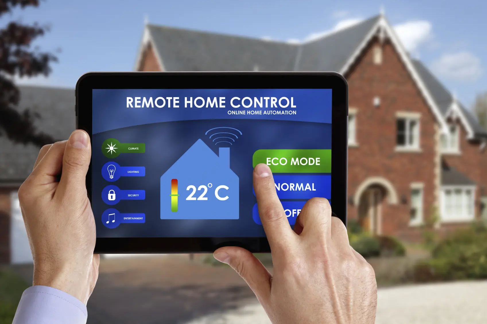

Mes Projets Robotiques

Système Domotique Intelligent
Conception d'un système d'automatisation domestique utilisant des microcontrôleurs ESP32, intégré à Blynk pour le contrôle à distance de la porte de garage et la détection de gaz pour la sécurité.
2024 - En cours
Projet de Drone Autonome
Développement d'un drone autonome pour la surveillance aérienne, équipé d'une navigation alimentée par IA pour l'évitement d'obstacles et la recherche de chemin.
2024 - En coursFormation
Ingénierie en IA
Etudiante en cycle ingénieur, spécialisée en Génie Intelligence Artificielle et Data Technologies.
2023 - En coursBaccalauréat Scientifique
Baccalauréat sciences mathématiques B option française / Lycée Moulay Ismail.
2022 / 2021